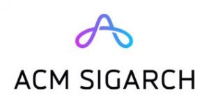

Program
Monday, October 10, 2022
(to be announced)
Tuesday, October 11, 2022
(to be announced)
Wednesday, October 12, 2022
(to be announced)
Important Dates and Deadlines
Conference Papers:
- Abstracts: April 18, 2022
- Full Papers: April 25, 2022
- Round 1 Rebuttal: June 6–9, 2022
- Round 2 Rebuttal: July 11–14, 2022
- Author Notification: July 29, 2022
- Artifact Submission: August 5, 2022
- Camera Ready Papers: August 26, 2022
Workshops and Tutorials:
- Submission Deadline: May 2, 2022
- Notification: May 9, 2022
- Workshops/Tutorials: October 8–9, 2022
Conference: October 10–12, 2022
Previous PACTs
PACT21, PACT20, PACT19, PACT18, PACT17, PACT16, PACT15, PACT14, PACT13, PACT12, PACT11, PACT10, PACT09, PACT08, PACT07, PACT06, PACT05, PACT04, PACT03, PACT02, PACT01, PACT00, PACT99
Sponsors
Supporters
